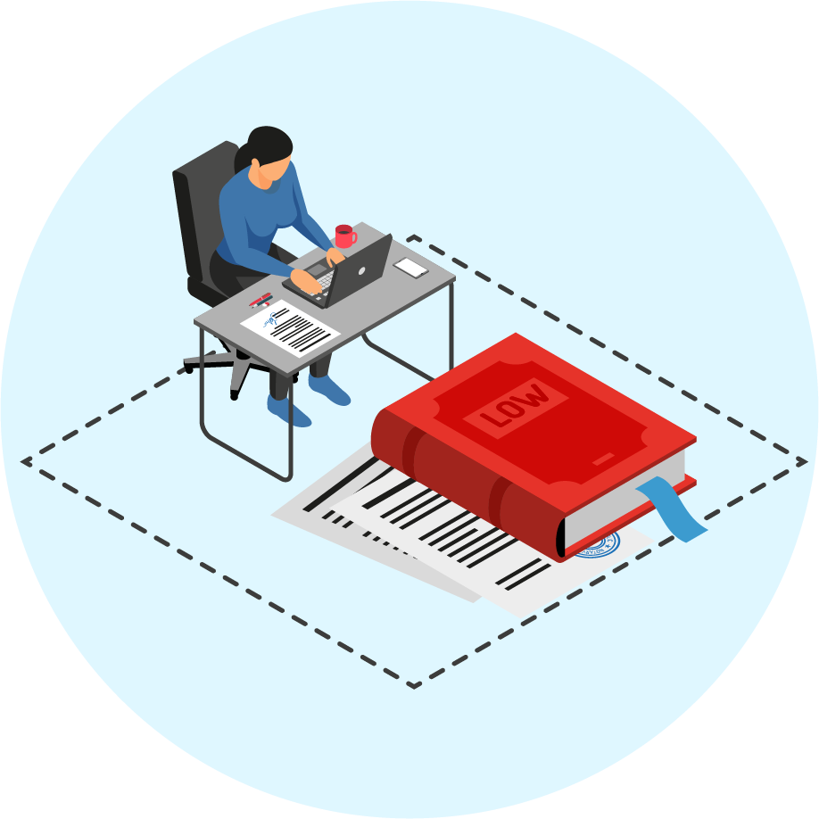

Se podrá modificar el contrato garantizando el cumplimiento de su fin, cuando:
| Sobrevengan circunstancias o eventos de fuerza mayor, caso fortuito, el hecho de un tercero debidamente comprobado que afecte la ejecución del contrato y ameriten revisar las condiciones pactadas. | |
| Cuando la Administración lo considere necesario para cumplir su misión institucional. | |
| Cuando suceda una o varias de las circunstancias estipuladas en el contrato para realizar modificaciones. |
Concepto Visto
Condiciones para modificar un contrato
| La solicitud deberá presentarse por escrito una vez la parte solicitante tenga conocimiento de las circunstancias que dan origen a la misma. | |
| La solicitud de modificación y el proceso de modificación deberán iniciarse cuando esté vigente el término de ejecución del contrato y mínimo con diez (10) días calendarios de antelación al vencimiento del mismo. | |
| La solicitud no debe alterar las condiciones que originaron la selección de la propuesta. | |
| El contrato por regla general se podrá adicionar únicamente hasta un máximo del 50% de su valor inicial, salvo cuando por situaciones especiales del Gobierno colombiano, se declare algún estado de excepción consagrado en el art 211 y siguientes de la Constitución Nacional, razón por la cual se podrán adicionar sin limitación al valor, previa justificación de la necesidad y la forma como dichos bienes y servicios contribuirán a gestionar o mitigar la situación de emergencia. Igualmente, esta disposición se aplicará a los contratos que se celebren durante el término de la declaratoria y durante el término que dicho estado esté vigente. |
Condiciones para modificar un contrato
| Así las cosas, una vez termine el estado de excepción, no podrán realizarse nuevas adiciones en relación con estos contratos. salvo aquellos que no hayan superado el tope establecido por regla general en el presente numeral. | |
| La solicitud para modificar un contrato, deberá estar previamente justificada, analizando las condiciones técnicas, jurídicas y económicas que procedan, adjuntando los soportes necesarios que motivan dicha modificación. | |
| Si la modificación es motivada por un hecho de fuerza mayor, el mismo deberá estar debidamente sustentado. Los términos y condiciones del contrato se modificarán en aquellos aspectos que hayan sido afectados hasta tanto desaparezcan o se subsanen las causas de fuerza mayor. Sin embargo, si pasados treinta (30) días de presentarse los hechos de fuerza mayor estos no han desaparecido o no se han subsanado, se podrán cancelar los bienes y/o servicios no entregados o el contrato en su totalidad. | |
| Los modificatorios que se refieran a adiciones en valor, de los contratos que se hayan celebrado a través del procedimiento mayor se deben llevar a ponencia ante el Comité de Adquisiciones, para su aprobación. |
Condiciones para modificar un contrato
| En cuanto a la adición en valor de los contratos que se adelanten a través de procedimiento abreviado, se diligenciará el (Anexo H) avalado por el Supervisor del Contrato, Subdirector Financiero ACOFA o su equivalente en otras Fuerzas y Especialista Jurídico ACOFA o su equivalente en otras Fuerzas. | |
| Para ambos casos cuando se trate de servicios, la adición a los valores deberá realizarse sobre la misma línea en SAP de acuerdo con el anexo P. | |
| Las demás modificaciones (tiempo de entrega, prorrogas, entre otras), tanto para contratos adelantados a través de procedimiento mayor o abreviado se tramitarán mediante el diligenciamiento del formato MODIFICATORIO CONTRATO SAP (Anexo H), el cual será firmado por el Supervisor del Contrato, Subdirector Financiero de ACOFA o su equivalente en otras Fuerzas y Jefe Área Control y Seguimiento o su equivalente en otras Fuerzas”. |
 Condiciones para modificar un contrato
| La modificación del contrato entra en efecto cuando ambas partes firman el acuerdo modificatorio y en caso de que se requiera la modificación de las pólizas contractuales, el contratista debe hacer los cambios del caso. | |
| Las modificaciones en el rubro, recurso, guion o vigencia presupuestal de los recursos, que no afecten el valor y fecha de los pagos pactados con el contratista, podrán ser modificados por las Unidades Ejecutoras mediante la elaboración de un anexo H, realizando el ajuste respectivo en la minuta. Para lo cual no se requerirá la firma del proveedor en la misma, considerando que se mantienen las condiciones de pago de la minuta anterior. | |
| En contratos abiertos la modificación del contrato por efectos de una reducción no podrá superar el monto del pago anticipado si lo hubiere, salvo que la Dependencia solicitante justifique los motivos por los cuales no se efectuó el cargue respectivo. |
Concepto Visto
Documentos requeridos para modificar un contrato
| Sobrevengan circunstancias o eventos de fuerza mayor, caso fortuito, el hecho de un tercero debidamente comprobado que afecte la ejecución del contrato y ameriten revisar las condiciones pactadas. | |
| Cuando la Administración lo considere necesario para cumplir su misión institucional. | |
| Cuando suceda una o varias de las circunstancias estipuladas en el contrato para realizar modificaciones. |
Modificación orden de compra o pedido en los contratos abiertos
Concepto Visto
Modificación del contrato